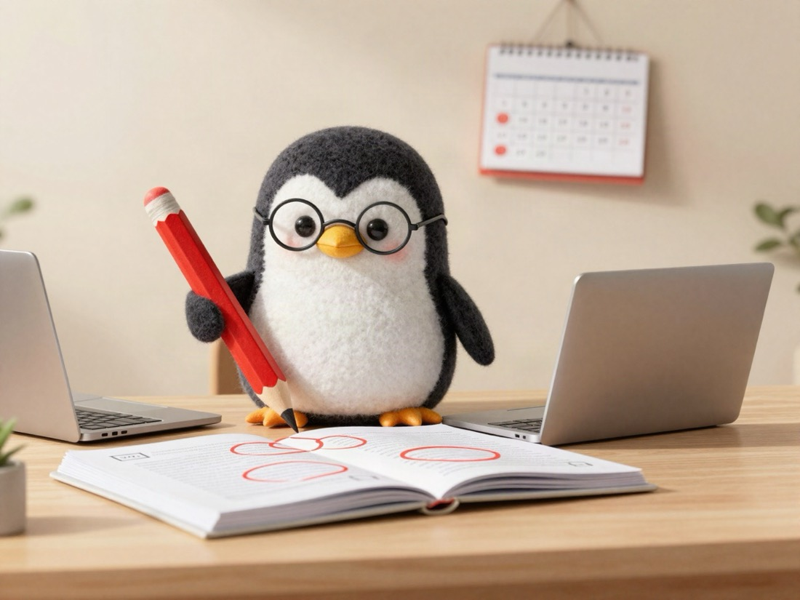
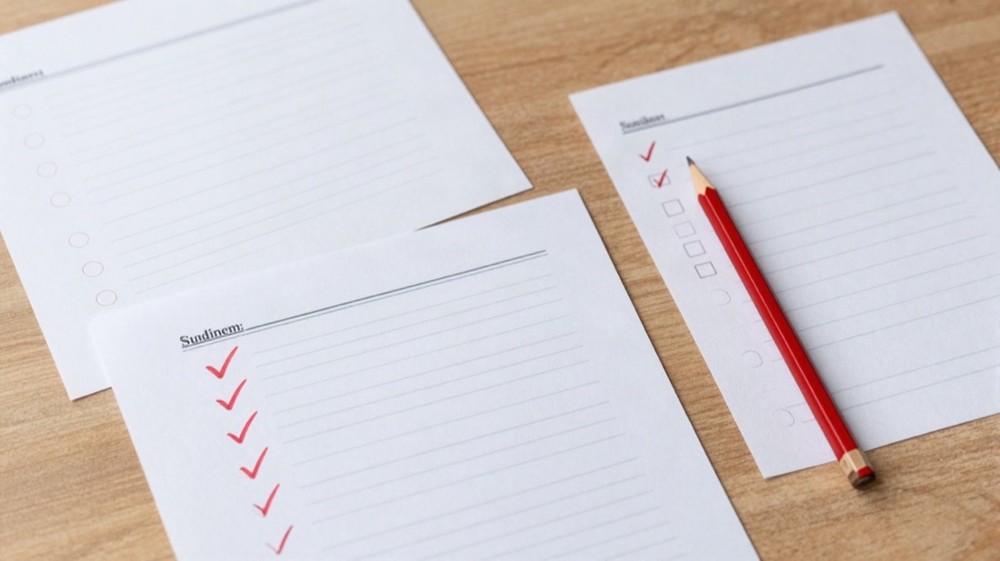

Once a week, I ask AI to be a very strict editor 🖍

I write this blog hoping it can cheer someone up a little, or make them laugh a little.
But when I am writing, I get excited without meaning to. I make the story a little bigger, bend the facts a little, or say things too strongly because of the mood.
The other day, I had AI read all 245 posts so far, and it came back with 64 points to fix. That means I made some mistake in about 1 out of every 4 posts.
After that, I was able to fix a lot of them.

AI is usually kind, so it often says "That is a good point." So, only once a week, I ask it, "Please point out my mistakes without holding back," and it becomes a very strict editor.
(So I do not forget, I have already put it on my schedule with AI.)
It checks these 3 things.
Will the reader feel bad?
Will the company or the people in the post have trouble?
Am I making the story bigger than it was?
More than being funny, I care most about not losing big points first. It is like a weekly check-up for my blog.
How many points will there be next week? 🖍